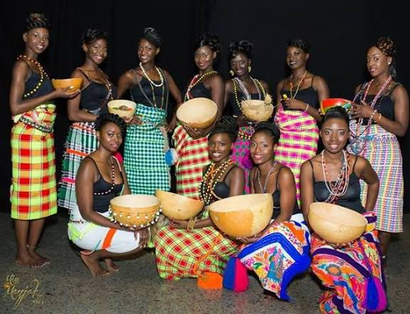
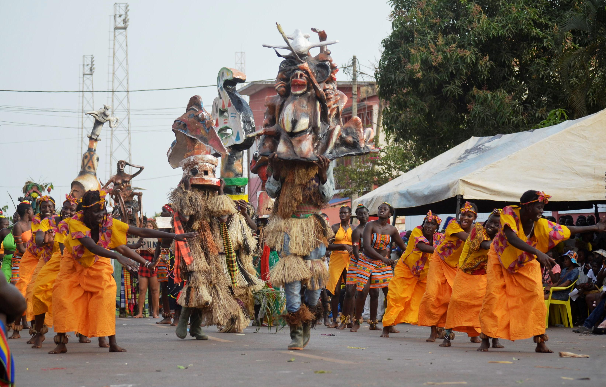

A cultura da Guiné-Bissau é marcada pela diversidade étnica e pela riqueza das tradições africanas. O país possui vários grupos étnicos, como os Balantas, Fulas, Mandingas, Manjacos e Papéis, cada um com seus costumes, línguas e expressões culturais.
A música e a dança têm grande importância na vida cultural guineense. O ritmo Gumbé é um dos mais tradicionais e representa a identidade nacional. As festas tradicionais, cerimônias religiosas e celebrações comunitárias fortalecem os laços sociais.

Origens dos Manjacos
Os Manjaco em manjaco: Manjaku, são uma das várias etnias da Guiné-Bissau, estão localizados por todo o litoral a sul do Rio Cacheu até a terra dos Papeis, cobrem especificamente as zonas de Cacheu, Reino de Tchur, Caió, Calequisse, Bassarel, Cobiana, Cachungo e as ilhas de Jeta e Pecixe. O seu nome signifca “eu digo-te”, a sua língua está classificada como parte das línguas Senegal-Guiné, que são uma subdivisão das línguas atlânticas.
No Senegal, França, Gâmbia e nos países que envolvem a Guiné-Bissau existem grandes comunidades de manjacos ainda hoje.
A sua etnia é constituída por sete “djorson”: Baigas, Baçassal, Bassafim, Batat, Ba ei, Babussine e Bassetcho.
Esta comunidade é constituída por famílias extensas ou alargadas, que são definidas por um grupo constituído pelo homem, mulher (ou mulheres), filhos, sobrinhos e outros parentes diretos, aos quais fica a obrigação de cooperar sempre na manutenção e perpetuação dessa sociedade.
Mas para além de ainda ser uma sociedade patriarcal é uma sociedade extremamente hierarquizada que se estabelece a partir: Naiëk Pëboka (chefe de casa); Naiëkkaboka (chefe da linhagem/ famílias extensas ou alargadas); Maték (chefes de cada parte); Namantch Utchak (chefe/régulo) de cada tabanka e no topo Namantchkor Basarel (régulos dos régulos).
Têm muito o senso de coletividade e de culto aos antepassados, têm uma noção de um Deus supremo e criador, mas consideram-no distante dos homens e por isso o seu culto é orientado para divindades secundárias como o “espírito dinâmico”, que se liberta do indivíduo depois da sua morte, mas que mantem a sua personalidade e os seus gostos e por isso continua a fazer parte da família e é necessário lhe continuar a prestar culto para que ele não se vingue cruelmente.
Titulo:Mistura de trinta etnia de Guniné

Os Mandingas
Os mandingas (em mandinga: mandinka) ou malinques (também grafado como maninke, manding, mandenka e mandinko) são um grupo étnico da África ocidental, com uma população estimada em 45 milhões de pessoas.
Os mandingas são remanescentes do Império do Mali, o qual foi fundado no século XIII pelo Mansa Sundiata Queita. Migraram para o oeste, através do rio Níger, em busca de melhores terras cultiváveis e oportunidades de conquista.
São originários do atuais Mali, Gâmbia, Guiné, Serra Leoa, Senegal, Burquina Fasso, Libéria, Guiné-Bissau, Níger, Mauritânia e Costa do Marfim. Apesar de dispersos, os mandingas constituem o maior grupo étnico no Mali, na Guiné e na Gâmbia.
A nossa Musica
Enaida Marta:Allan Guine
BB Mlilly:Mama Mati